Références : véritables HTML originaux sans scripts fictifs, CSS/polices locaux. Les quatre illustrations locales déjà utilisées par les racines sont appliquées aux deux rendus ; ce ne sont pas de nouveaux téléchargements des URL Google. Les portraits et scènes fictifs de la référence ne deviennent pas des données du foyer. Profils natifs éphémères ; fixtures TEST pour les membres et missions, menus initiaux du moteur pour la Taverne. Écarts : états réels, commandes source, métadonnées et partage ; comptes et réglages hors des 53 sources gardent leur interface native.
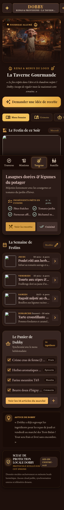
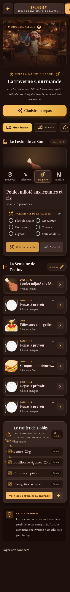
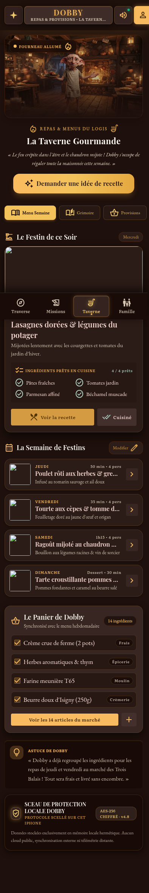
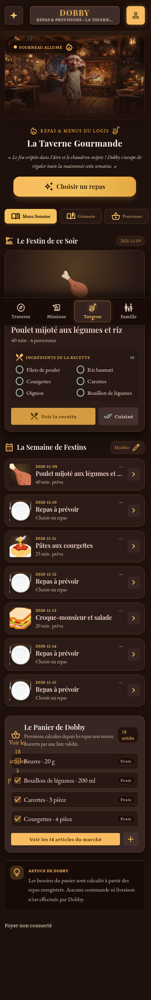
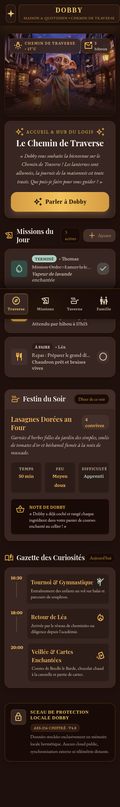
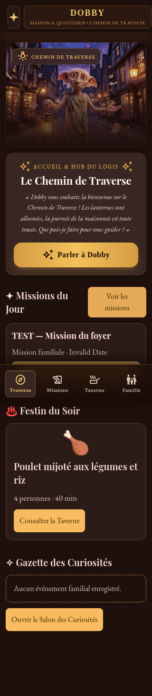
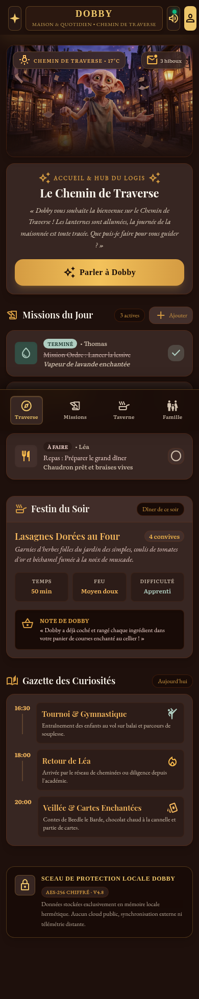
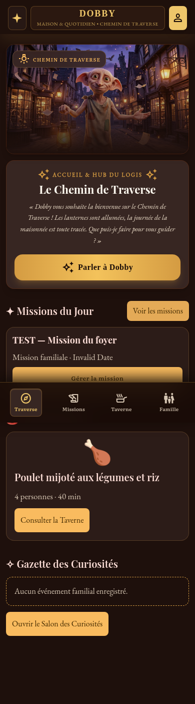
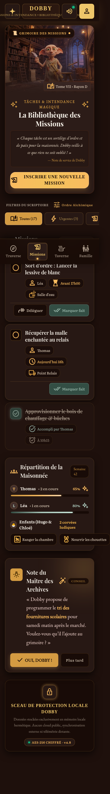
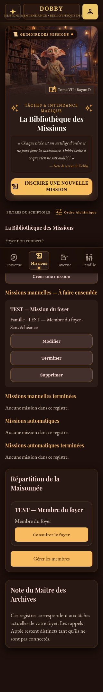
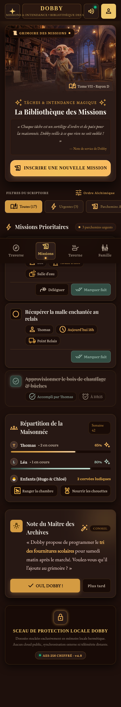
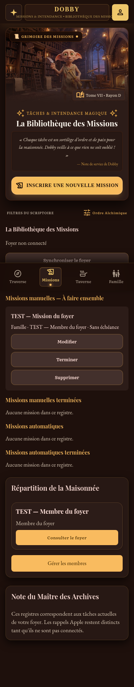
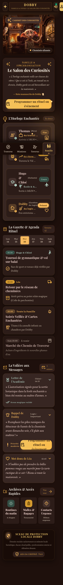
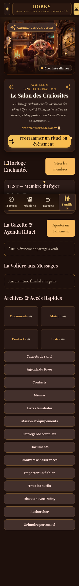
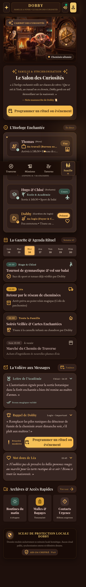
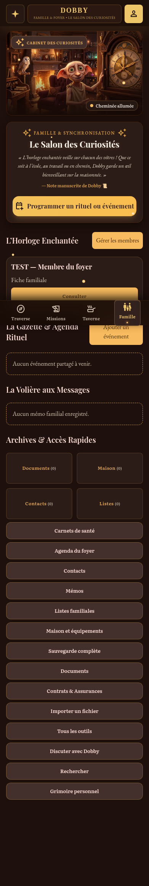